Community highlights
Livelihoods, healing, advocacy, and play
Each image represents the dedication of volunteers, mentors, and participants who make DEVIOW's mission possible.
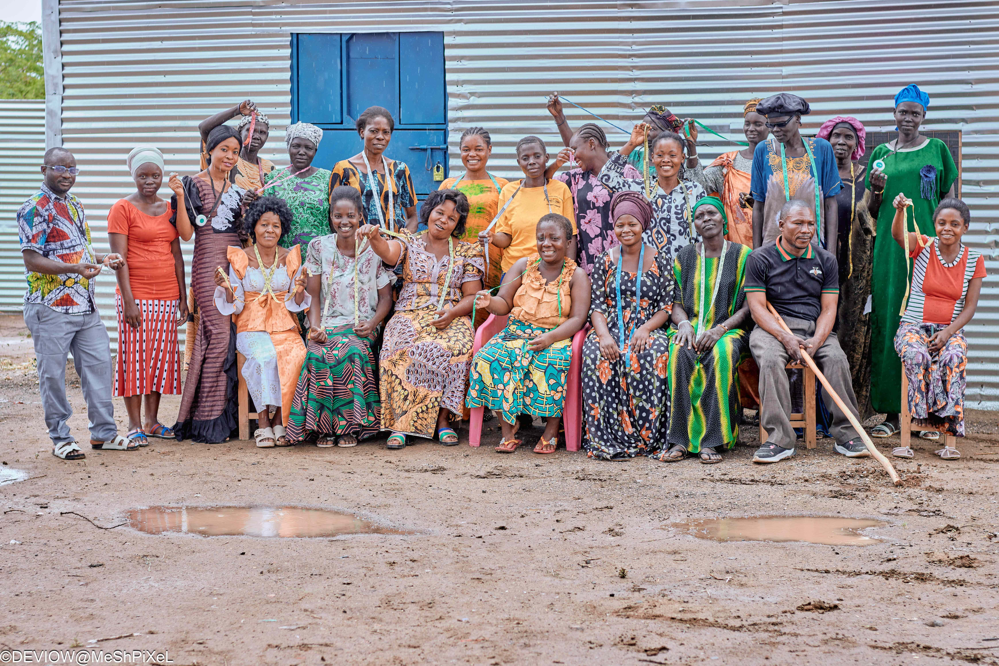
Women, men, and community leaders gather for GBV awareness and community mobilization in Kakuma, building collective understanding of rights and protection.
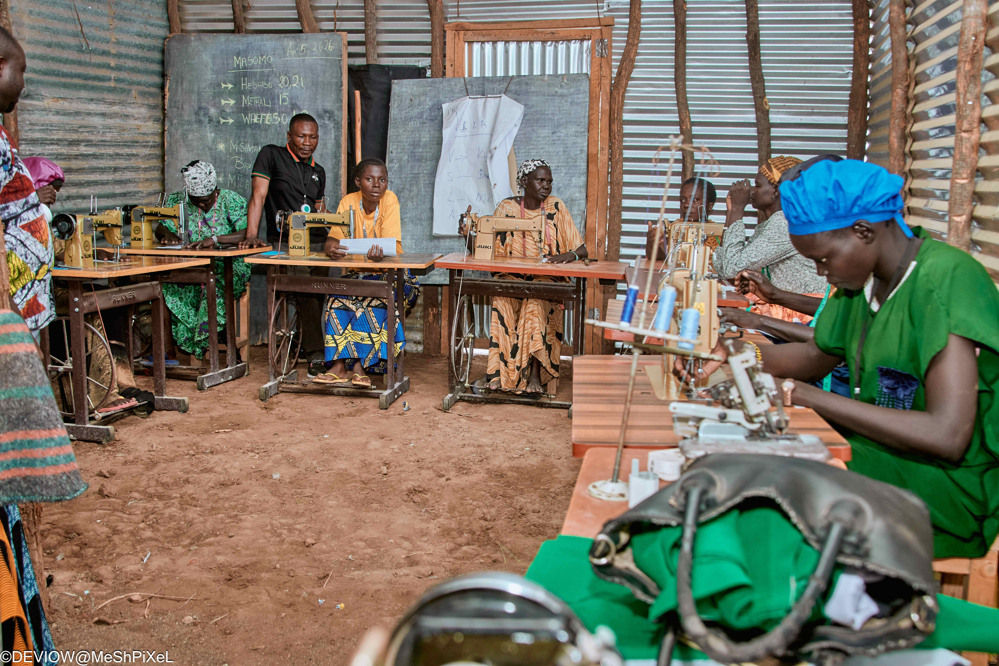
Women learn professional tailoring and dressmaking in structured workshops, gaining income-generating skills for sustainable livelihoods.
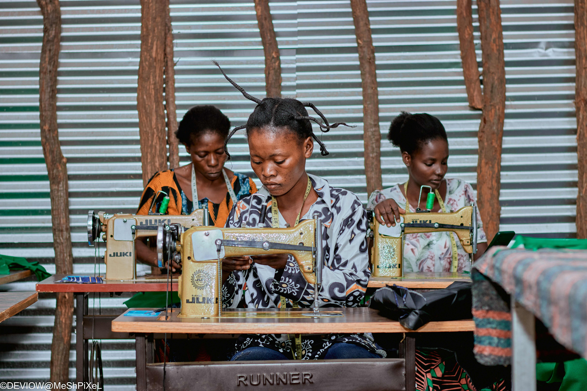
Participants practice hands-on tailoring techniques, developing professional craftsmanship to launch microenterprises and earn income.
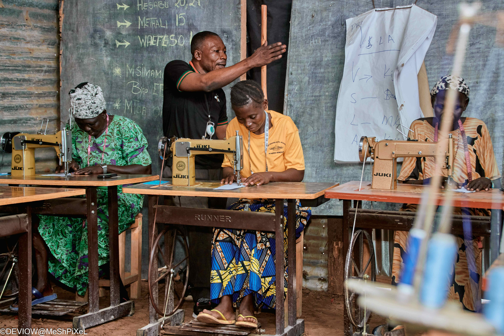
Experienced mentors guide women through tailoring curriculum with personalized support, ensuring skill mastery and business readiness.
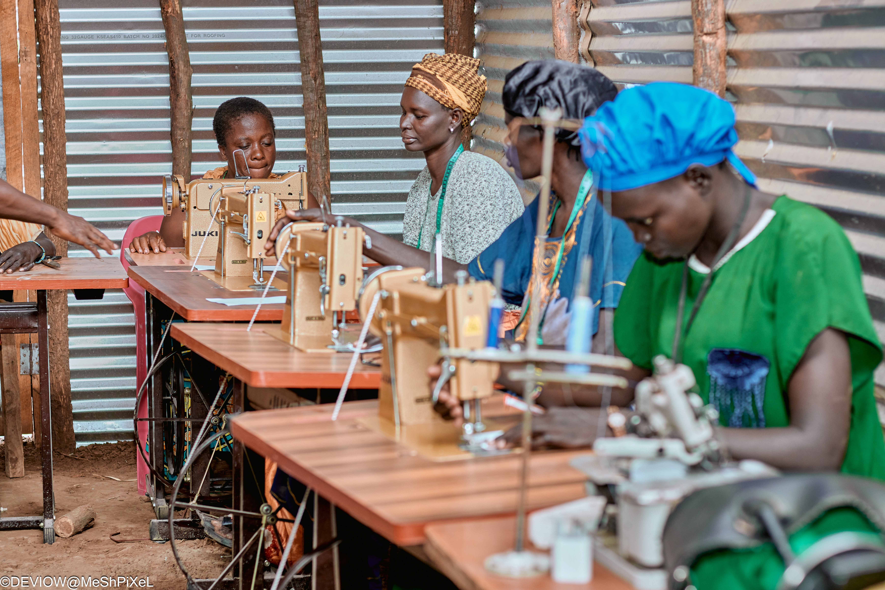
Young girls receive tailoring training alongside adult women, building youth engagement and creating a pipeline of skilled entrepreneurs.
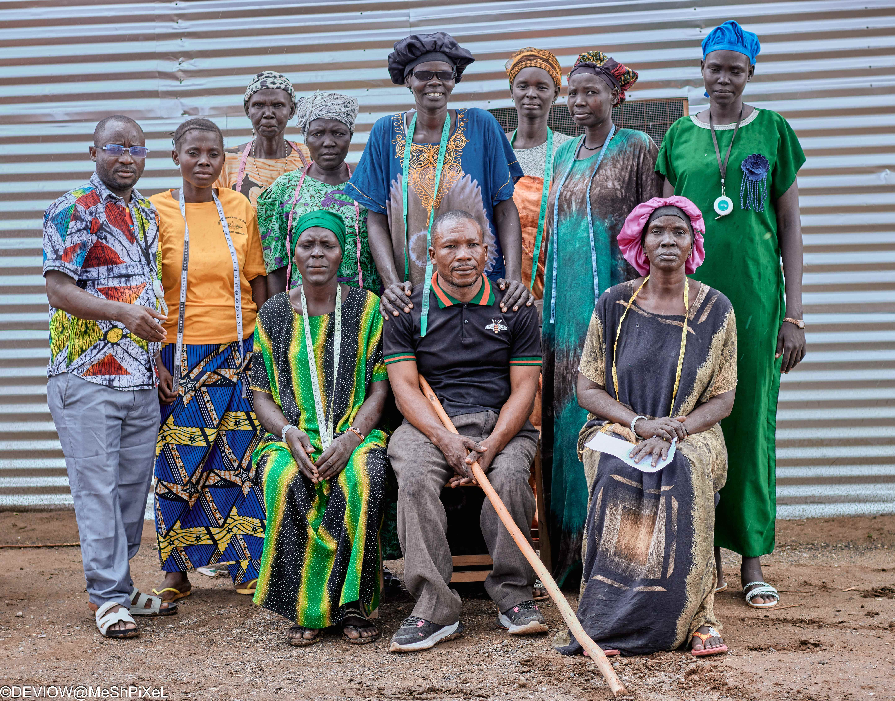
The DEVIOW team and community leaders stand united, representing refugee-led empowerment and solidarity in defying violence against women.
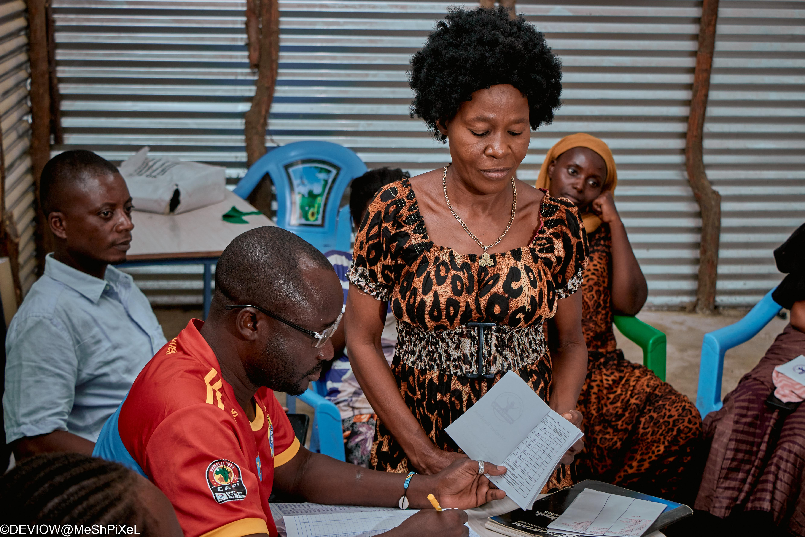
Women maintain detailed VSLA records, documenting contributions and ensuring transparency and accountability in savings groups.

Community members record financial transactions with precision, building financial literacy and trust within VSLA groups.
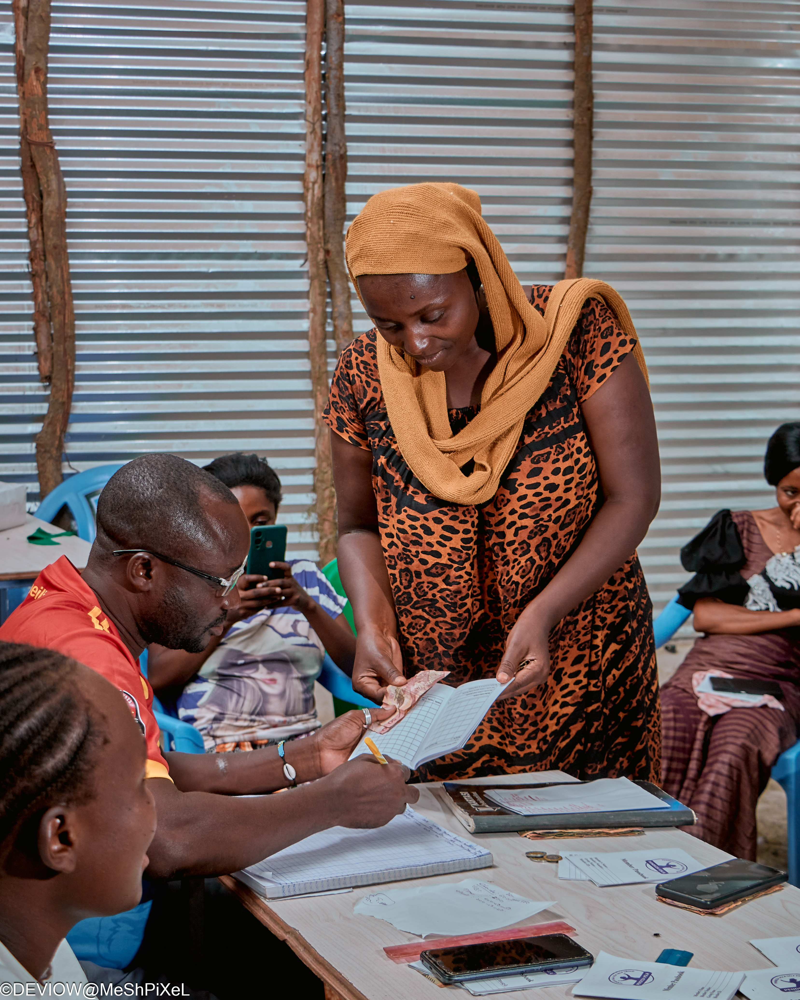
A facilitator leads the VSLA group, overseeing financial management and ensuring women's economic empowerment through savings collective action.

Women gather in circle formation to record savings contributions, embodying the spirit of community solidarity and collective financial growth.
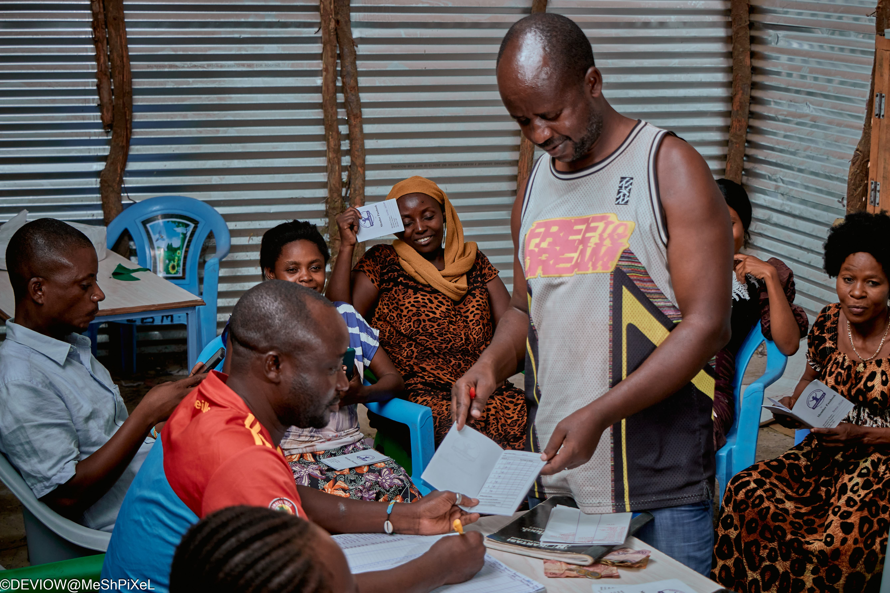
Members contribute regularly to their VSLA groups, building financial discipline and creating safety nets for emergencies and opportunities.

Women engage in open dialogue circles, sharing experiences and insights to build community awareness on GBV prevention and healing.

The VSLA circle brings women together for transparent financial discussions, fostering trust, leadership, and economic agency.
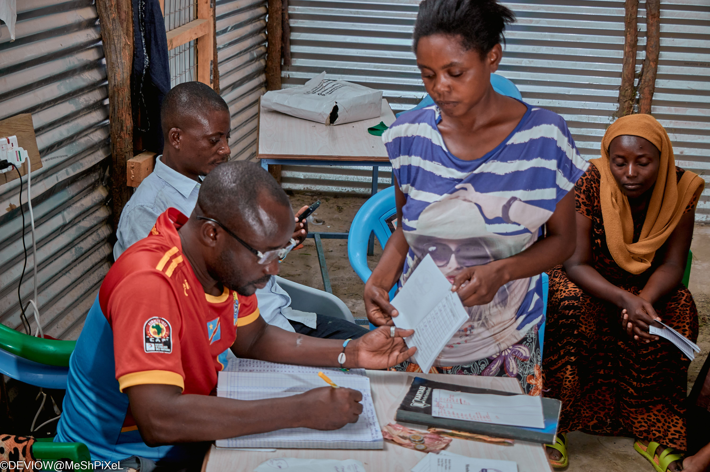
Women analyze and discuss their group's financial performance, developing critical skills in money management and economic decision-making.
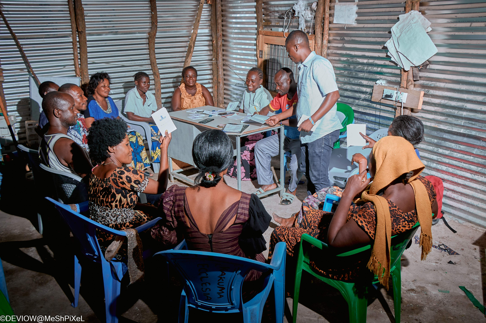
The full community gathers in circles for VSLA meetings, building solidarity and accountability through collective financial management.
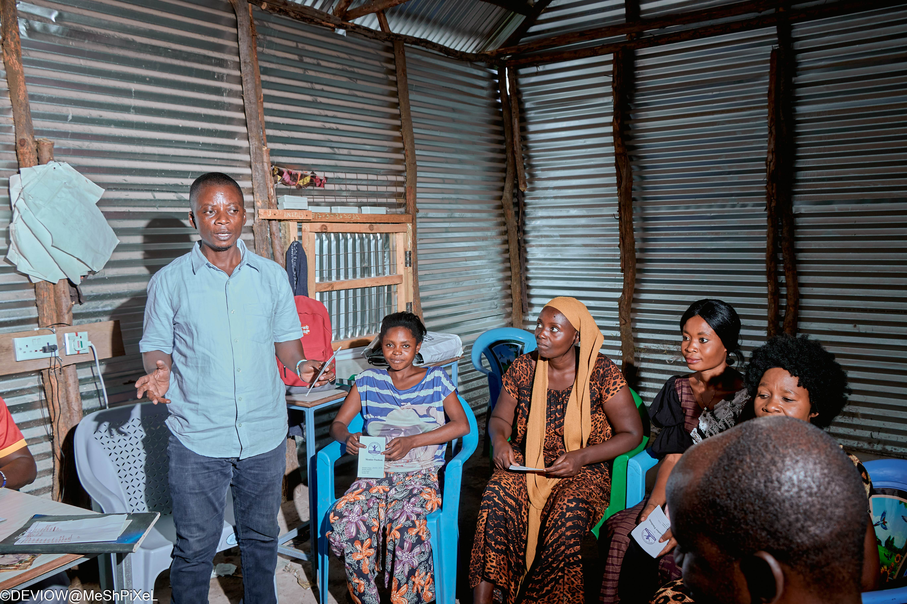
Facilitators lead community dialogues on gender-based violence prevention, empowering women with knowledge to protect themselves and others.

Women gather in safe spaces to share stories, provide peer support, and build collective healing from violence and trauma.